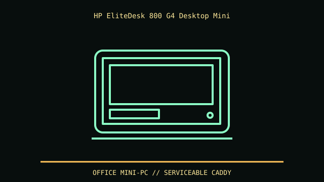

[ IDENTIFIED ENCLOSURE // HP ELITEDESK 800 G4 DESKTOP MINI (65 W CHASSIS) ]
HP EliteDesk 800 G4 Desktop Mini
177 × 175 × 34 mm (W × D × H) for the 65 W Mini chassis. The larger 95 W performance version has different thermal conditions; provide airflow around the vented sides.

REVISION / FIT CAVEAT: 800 G4 65 W Mini differs from 95 W Performance Mini and SFF/Tower. Product number determines CPU thermal envelope, adapter and 2.5-inch caddy.
Model-specific mechanical record
| Catalog leaf | Office and mini-PC enclosures |
|---|---|
| Identity / generation | HP EliteDesk 800 G4 Desktop Mini (65 W chassis) |
| Dimensions / clearance | 177 × 175 × 34 mm (W × D × H) for the 65 W Mini chassis. The larger 95 W performance version has different thermal conditions; provide airflow around the vented sides. |
| Drive bays / mounts | M.2 storage plus one optional 2.5-inch SATA drive with correct cage/cable; order/configuration determines presence of the drive bracket. |
| Board / chassis compatibility | HP-specific Mini board and external adapter; proprietary mounting and power. Optional expansion/port modules and VESA sleeve alter external fit, not motherboard form factor. |
| Revision identification | 800 G4 65 W Mini differs from 95 W Performance Mini and SFF/Tower. Product number determines CPU thermal envelope, adapter and 2.5-inch caddy. |
Compatibility and preservation
HP-specific Mini board and external adapter; proprietary mounting and power. Optional expansion/port modules and VESA sleeve alter external fit, not motherboard form factor.
Keep the 2.5-inch carrier, bottom plate screws, WLAN antennas and optional port module matched to this unit. Observe HP maintenance guide and use the correct adapter for configured CPU.
Before transfer or restoration, photograph the complete model label, assembly/board revisions, bay/backplane identifiers and included accessories. Measure the actual specimen when planning installation or shipping; nominal envelope figures may exclude protruding feet, rails, doors or cables.
Manufacturer manuals and archival sources
- HP EliteDesk 800 G4 Desktop Mini manuals — HP SupportModel-specific manufacturer specification, service manual, or technical reference used for the listed dimensions and mechanical configuration.
- HP EliteDesk 800 G4 65W Mini specifications — HP SupportSupplemental model documentation or institutional/technical archival record; use the exact product code and manual revision for a specimen.
Listings distinguish base configuration from optional drive, PSU, fan, rack and accessory kits. Do not combine maximum capacities if cages or components occupy the same volume.